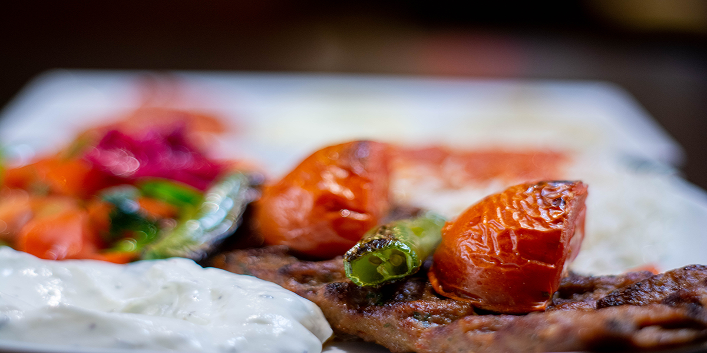
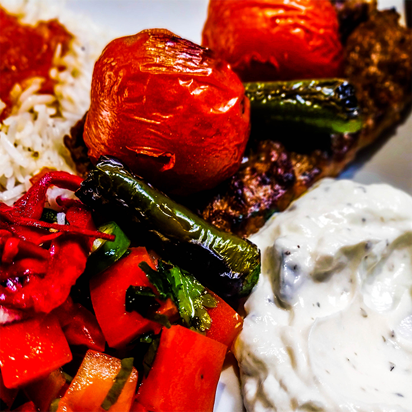

ADANA KEBAB - the most famous Turkish traditional dish


But despite all these good things happening, I have never acted like I am better. Because I believe that it is very important to keep the contact with the earth. “Fly high, fall long” – this is how it works.

I was a small kid when my father opened his first restaurant. At that time we were just running around the restaurant with my brother and didn’t even know that by bringing us to the restaurant every day he is growing interest in us, passion and responsibility.
When I first started to work, I was 11 years old. I was coming ever day after school and working hard until late. I was very responsible, passioned and motivated. Our business went well, we had stable income, but at one point I realized that it is a routine. Everything is stable. Everything was the same. There was no development. I wasn’t happy. Because I couldn’t see the future.
I realized, that I need to change my vision. Then I started to study about cooking. I discovered new cuisines, new ideas, different methods. And I came back as a totally different person. I looked at all other restaurants in Bazar’s Vest and realized, that this time people needs this food. So we bought a restaurant next door and made it bigger. We planned to spend 2 months for all changes, but at the same time we received an offer to start the project at the beachfront.
I didn’t have enough money for two projects. I couldn’t hire people to do the construction works, so I had to work days and nights and do everything by myself. I didn’t want to make just a restaurant. I wanted to make a real and unique place. A Turkish experience. But I couldn’t. And it broke me inside.
Despite all difficulties we opened. First month it was full every day. But after was the Ramadan period and it was empty. Then the summer came and all people were travelling so we still didn’t have high sales. We couldn’t pay our rent. But what was important, everyday we were seeing new faces. We were getting new customers. But something was wrong… I stoped for a moment and asked myself: “Metin! Why it is not working? What is wrong?”
I realized that the food quality is changing and something is not good. I decided to go to the kitchen instead of the hall. Do the best what I can – I am the best to cook. I started to cook and spend more time in the kitchen. Everything started to change. I saw people coming back. When I see the people coming back, I am saying to my staff – make it special for him. Make this experience better than the last time. We don’t ask customers why they are coming back. We are encouraging them to come back again.
Things went better but it was still not enough for me. I didn’t want to stop. Then we received an email that we are chosen for Byens Bedste award and there are 5 more in your category. Customers were voting and then it was an award show in downtown. A lot of famous people, television, different restaurants. We didn’t expect to have an award, because we were working just for our customers, we didn’t advertise our restaurant. Our satisfied customers is our best advert. We won! And it gave me more motivation to make it even more better and more bigger.
TV2 contacted me to offer to cook together with famous chef and collect donation for people who were sick with cancer. It touched my heart and I said “yes”. They came with a big truck like in the movie. They prepared everything and we started to cook and we made 500 healthy and nutritional meals. A lot of cameras around, live stage, people watching. It was a little bit stressing, but people started to call and donate the money and I felt so proud and happy. Of course it made us more popularity and feedback from our customers.
Then we were contacted by another Danish television “Danmarks Radio” by the offer to participate in their program “Mad magazine” to cook the food with a lot of garlic. We were two chefs, one made Danish national dish with a lot of garlic, I made Turkish. It was happening in Bazar Vest and again a lot of cameras, all people were curious and watching. But despite all these good things happening, I have never acted like I am better. Because I believe that it is very important to keep the contact with the earth. “Fly high, fall long” – this is how it works.
After these PR programs, we received a lot of calls with requests to host the birthday parties, weddings and different occasions. I wasn’t sure about that, because it was a totally new field for me. I did some calculations and told the price. I wasn’t sure that they will accept that price, but they said yes. So we started to go out with the mobile kitchen and host different events. This gave us a lot of connections and networks.
When you think how people are deciding about the place where to eat, first they consider places which they know about or heard about. Some places in downtown or world’s famous places like McDonalds, burger king etc. I was thinking, why people don’t consider Metin’s grill? Then I created social media and started to be active on SoMe. If 600 people see the post in the Facebook or Instagram and 10 of them after will come to our restaurant – we are winners. And we will still stay in minds of the rest 590 people.
Now we are successful restaurant with good economics and 2 other departments. But this is not enough for me. What you can see now is not the end. It is a half. We are working and we are not going to stop. We are ready to change. To make it better.


With two successful seasons behind, the summer kitchen this year will be even more modernized and improved. We are giving people the opportunity to eat authentic Turkish food while enjoying a seaside walk.
Check our social media accounts and keep staying updated about the starting of a new Metin's Grill summer season!

One day, we were called and asked to cook for 17 people at a birthday party outside the restaurant. This was something we've never done before. So, that’s how our mobile kitchen came to life: you don’t have to go to the restaurant to eat, because the food can come to you.
In the present, we are often going out for special events - start networking with different people. Offering quality food and unique experience to our clients is our main goal. What's the next thing you want to celebrate?